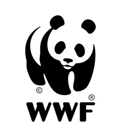

Protected areas, OECMs and Key Biodiversity Areas in Tunisia, Algeria, Morocco, Libya and Egypt
Version with Western Sahara included in Morocco. Morocco's figures here differ from Protected Planet's, which leave Western Sahara out.

Region land covered, PAs + OECMs—Indicator 3.1, five countries pooled
Of which protected areas—Land, OECMs excluded
Of which OECMs—Algeria and Morocco only
Region sea covered—Marine and coastal realm
Sea still needed for 30%—km², five countries pooled
Average KBA coverage—Mean % of each KBA covered
Coverage by country
Click a country to open its page. Shade shows the measure picked below.
Land and sea coverage against 30%
Protected areas and OECMs (PA area removed), percent of each realm. Dashed line: 30% target.
Protected areasOECMsSea, PAs + OECMs
Country comparison
Click a row to open the country. Coverage after removing overlaps, Mollweide equal-area, WDPA/WD-OECM October 2026.
What the numbers say
Land covered, PAs + OECMs—
Protected areas, land—percent of land
OECMs, land—PA area removed
Sea covered—
Land still needed for 30%—km²
Sea still needed for 30%—km²
Average KBA coverage—
Lakes and wetlands covered—GLWD v2
Map
Scroll or pinch to zoom, drag to pan. Hover or click any protected area, OECM or KBA for its details.
Report
Coverage over time
Cumulative coverage by designation year, from net (flattened) site areas. Steps hold until the next designation.
Ecoregions
Share of each ecoregion covered by PAs and OECMs. Dashed line: 30%.
Lakes and wetlands
GLWD v2 wetland groups on land, share inside PAs and OECMs.
Governance and effectiveness
Share of covered land by IUCN governance type and by management-effectiveness evaluation (valid for 5 years).
Key Biodiversity Areas
Site register
Land coverage over time, all countries
PAs + OECMs, cumulative by designation year.
KBA coverage by group
Mean % covered: marine (SDG 14.5.1), freshwater and mountain (SDG 15.1.2, 15.4.1).
Inland waters
Share of river length and of lake and wetland area inside PAs and OECMs.
Cross-check with Protected Planet
Land coverage, PAs + OECMs: this analysis (filled) against Protected Planet, October 2026 (ring).
Data quality
Share of covered land with no governance type reported, and with a current effectiveness evaluation.
Least-covered ecoregions
Land ecoregions over 5,000 km² in each country, lowest coverage first.
North Africa 30×30 report
Regional findings, then one section per country. Each country's full illustrated guide is linked at the end of its section.
Methodology
How every number in this dashboard was made
This page explains, from first principles, how Headline Indicator 3.1 of the Kunming-Montreal Global Biodiversity Framework was calculated for Tunisia, Algeria, Morocco, Libya and Egypt. It assumes no prior knowledge of GIS or of the indicator. Each step says what to do, why, how to do it in small sub-steps, and shows a real example from one of the five countries. At the end you will find the decisions taken for each country, the limits of the method, every source and link used, and the full step-by-step guide for each country.
0The basics in plain words
Target 3 of the Global Biodiversity Framework, agreed by 196 countries in December 2022, asks that by 2030 at least 30% of land and inland waters and 30% of coastal and marine areas are effectively conserved through protected areas and other effective area-based conservation measures (OECMs), especially areas important for biodiversity, ecologically representative, well connected and equitably governed. This is the "30×30" target.
Headline Indicator 3.1 is the official way to measure progress: the share of a country's land, and separately of its sea, that lies inside protected areas or OECMs, counting every square kilometre only once.
Glossary
Protected area (PA)
A clearly defined space, recognised and managed by law or other effective means, for the long-term conservation of nature (IUCN definition). National parks, nature reserves and Ramsar wetlands are examples.
OECM
"Other effective area-based conservation measure": an area that is not a protected area but is governed and managed in ways that achieve lasting positive outcomes for biodiversity (CBD decision 14/8). Algeria's Cultural Parks and Morocco's permanent hunting reserves are reported as OECMs.
WDPA and WD-OECM
The World Database on Protected Areas and the World Database on OECMs, kept by UNEP-WCMC with IUCN and published monthly on Protected Planet. Each record is one designation of one site.
KBA
Key Biodiversity Area: a site that contributes significantly to the global persistence of biodiversity, identified with the IUCN Global Standard. KBAs are not protection; they show where protection matters most.
EEZ
Exclusive Economic Zone: the sea area up to 200 nautical miles from the coast where a country has sovereign rights. It is the denominator for the marine realm.
Realm
Land (terrestrial and inland waters) or sea (marine and coastal). The indicator is always reported per realm.
Flattening (dissolving)
Merging overlapping shapes into one layer so that ground covered by two or more designations is counted once.
Mollweide projection
A way to draw the round Earth on a flat map that keeps areas true. Measuring in it gives correct km² anywhere on the globe.
Buffer
A shape drawn around a point at a chosen distance. Here, a circle whose area equals the area a site reports.
GIS
Geographic Information System: software that stores and analyses maps, such as QGIS (free) or Python with geopandas (used here).
Net area
The part of a site's area not already counted under an earlier site. Net areas add up exactly to the flattened total.
GD-PAME
The Global Database on Protected Area Management Effectiveness: a record of evaluations (METT, RAPPAM, IMET and others) made at each site.
→The whole method on one page
Thirteen steps take raw downloads to a reported number. Steps 1 to 9 produce the headline indicator; step 10 adds the breakdowns the official metadata asks for; steps 11 to 13 put everything in the Excel tool, check it and write it up.
Tools used. Everything was scripted in Python (geopandas, shapely, pyproj, rasterio, openpyxl) so it can be re-run when the WDPA updates each month. The same steps can be done by hand in QGIS; the sub-steps below give both routes where they differ. The Excel workbook was recalculated in Microsoft Excel with zero formula errors for every country.
1Define the scope: what counts as the country's land and sea
Why. The indicator is a ratio. The bottom of the ratio (the denominator) is the country's land area or sea area. If two people use different boundaries, they get different percentages from the same protected areas. Fixing the base map first is the single most important decision for comparability.
Choose a land boundary. We used the open geoBoundaries "ADM0" outline (national borders) for every country. A national official boundary is equally valid if it is documented.
Choose a sea boundary. We used the Marine Regions EEZ version 12 (Flanders Marine Institute), the reference used by Protected Planet. Keep only the country's own 200-nautical-mile zone; set aside "overlapping claim" zones.
Decide on disputed territories and write the decision down. Match the convention of the global database unless national practice requires otherwise, and report the alternative.
Fill inland holes. Some outlines cut lakes out of the land. Inland waters belong to the land realm ("terrestrial and inland waters"), so fill these holes.
Close coastal gaps. Lagoons and inlets can fall between the land outline and the inner edge of the EEZ and belong to neither. Close small gaps (we used 5 km) and add the pieces that touch the sea to the marine realm.
Measure both areas in an equal-area projection (step 5) and write them into the Setup sheet of the Excel tool.
Step 1 in a picture: lake holes go to the land realm, coastal gaps to the sea.
Example · Tunisia's coastal lagoons
Lac de Tunis, Halk El Menzel and the Kneiss flats sit between the land outline and the EEZ. Before the fix, 40 km² of protected lagoon was counted nowhere. Closing the gaps added 113 km² to the marine realm and raised Tunisia's sea coverage from 1.04% to 1.07%. Filling lake holes added 11 km² to the land.
Example · disputed territories
Morocco: this version of the dashboard counts Western Sahara as part of Morocco. geoBoundaries includes it (685,174 km² of land); Protected Planet and the Marine Regions EEZ do not, so we add the Marine Regions "Overlapping claim Western Sahara" zone to the Moroccan EEZ (566,673 km² of sea in all) and count the six KBAs south of 27°40′N. The WDPA has no site there, so coverage falls from 33.70% to 20.42% on land and from 0.33% to 0.16% at sea. Egypt: the Halaib Triangle, claimed by Egypt and Sudan, was taken as the overlap of the two countries' geoBoundaries outlines (18,042 km²) and removed; with it, coverage is 12.81% instead of 11.24%.
Common mistake. Taking the land area from one source (a statistics yearbook) and the protected areas from another map. Use one base map for every area in the workbook.
2Collect the data
Why. The headline needs only protected areas, OECMs and the base map. The breakdowns need KBAs, ecosystem maps, inland waters and management-effectiveness records. Recording the exact version of each dataset makes the result reproducible.
Protected areas & OECMs
WDPA and WD-OECM, October 2026 release. Downloaded per country from the UNEP-WCMC map service behind Protected Planet (query iso3='TUN', polygons and points layers, in pages of 10–25 records to stay under size limits).
Base map
geoBoundaries ADM0 (land); Marine Regions EEZ v12 via its WFS service (sea).
Key Biodiversity Areas
World Database of KBAs, September 2026 global file (polygons, points, trigger species; licensed, request from the KBA Secretariat), plus each site's public factsheet.
Ecosystems
RESOLVE Ecoregions 2017 (land); Marine Ecoregions of the World (sea); GMBA Mountain Inventory v2.0 (mountains).
Inland waters
HydroRIVERS v1.0 (river lines); Global Lakes and Wetlands Database v2 (33 wetland classes, 500 m grid).
Effectiveness & national
GD-PAME evaluations read from each site page on Protected Planet; national reports to the CBD and NBSAPs for reconciliation.
Download the WDPA for the country. On protectedplanet.net search the country, then "Download" (shapefile or GeoPackage). Or query the map service as we did. Keep polygons and points: both count.
Download the WD-OECM the same way. Many countries have none (Tunisia, Libya, Egypt); Algeria has 5 and Morocco 338.
Note the release month (here October 2026) in Setup row 7. The WDPA changes every month.
Request the KBA data from the KBA Secretariat if you need boundaries; without them you can still use the factsheet coverage values.
Download the ecosystem and water layers once (global files, about 2 GB in total) and cut them to each country.
Read each site page on Protected Planet for its effectiveness evaluations (tool and year).
Example · what the WDPA holds
Country
PA polygons
PA points
OECMs
Total records
Tunisia
137
12
0
149
Algeria
71
2
5
78
Morocco
91
0
338
429
Libya
0
5
0
5
Egypt
47
3
0
50
3Filter the records
Why. Not every record should count. The official method (metadata steps 1–2) excludes sites that are not yet in force and designations whose zones are not managed for conservation.
Remove records whose STATUS is "Proposed" or "Not Reported". Keep Designated, Inscribed, Adopted and Established.
Remove UNESCO-MAB Biosphere Reserves. Their buffer and transition zones include farmland and towns; their cores are usually already protected under a national designation and counted there.
Remove points that have no reported area: a point with 0 km² cannot be turned into a circle.
Keep the excluded rows in the register with the reason, so the exclusion is visible and auditable. The Excel tool does this automatically.
Example · records excluded
Tunisia: 10 excluded (7 proposed points, including Jenein-oued Ouni, 3,600 km²; 3 biosphere reserves). Algeria: 8 biosphere reserves. Morocco: 45 (42 proposed, among them seven new natural parks and five marine protected areas; 3 biosphere reserves). Egypt: 15 (13 large areas proposed since 1999, 56,941 km², including the Qattara Depression; 2 biosphere reserves). Libya: none.
Common mistake. Counting a biosphere reserve and the national park inside it. The park is counted once; the reserve is excluded.
4Turn points into circles
Why. Some sites are recorded only as a point with a reported area. To measure overlaps and split land from sea, the method draws a circle of that area around the point (metadata step 3).
Take the reported area A (REP_AREA, in km²).
Compute the radius: r = √(A ÷ π). The Excel register shows it in column AI.
Draw the circle in an equal-area projection (step 5), so its area is exactly A.
Flag the site as approximate: a circle cannot follow a coastline or a valley.
r = √(4,000 ÷ 3.1416) = 35.7 km
Example · Libya, where every site is a point
Libya's five WDPA sites are all points. El Nagaza National Park reports 4,000 km² and is recorded as marine; its circle of 35.7 km radius around 32.67°N 14.28°E falls 1,759 km² on land and 2,241 km² at sea. That one circle gives 84% of Libya's land figure and all of its sea figure. In Tunisia, the coastal point Hamada-Sidi Toui (120 km²) spills 42 km² into the sea although the record says "terrestrial".
5Clip to land and sea, and measure in an equal-area projection
Why. A site may straddle the coast: its land part counts toward the land target and its sea part toward the sea target. Areas must be measured in a projection that keeps areas true, otherwise northern sites look bigger than southern ones (metadata steps 5–6).
Repair geometries. Some source shapes are invalid (self-crossing lines). Run "Fix geometries" in QGIS or make_valid in Python. Egypt's EEZ polygon needed this.
Reproject everything to Mollweide (code ESRI:54009). In QGIS: right-click layer → Export → Save Features As → CRS ESRI:54009.
Intersect each site with the land polygon to get its land part, and with the sea polygon to get its sea part.
Keep only polygon pieces. Overlays sometimes leave lines or points; drop them.
Measure each part in km² (area in m² ÷ 1,000,000).
Why not latitude–longitude? In degrees, a 1°×1° square covers about 12,400 km² at the equator but only about 9,800 km² at 38°N (northern Tunisia). Measuring in degrees would overstate areas in the north by about a quarter. Mollweide removes that bias.
6Flatten the protected areas so each km² counts once
Why. One place is often listed several times: as a national park, a Ramsar wetland and a World Heritage site. Adding the records counts the same ground two, three or five times. The method dissolves all protected areas into one flat layer before measuring (metadata step 4).
Put all counted protected areas in one layer (polygons plus the circles from step 4), separately for land parts and sea parts.
Dissolve them into one shape per realm. QGIS: Vector → Geoprocessing → Dissolve (no field). Python: unary_union.
Measure the dissolved shape. This is the protected area for the indicator.
Compare with the sum of the records; the difference is the double counting removed.
Example · Tunisia, land
Sum of 139 records19,103 km²
After flattening12,345 km²
Chott Jrid is listed as a 1949 national wetland zone and a 2007 Ramsar site, each about 5,000 km². Ichkeul appears five times. Flattening removes more than a third of the summed area; 69 pairs of records overlap.
7Add the OECMs, after removing protected area from them
Why. Where an OECM overlaps a protected area, that ground is already counted as protected. The method erases all protected-area ground from the OECM layer first, then dissolves what is left (metadata OECM step 4). This also lets you report the PA and OECM shares separately.
Clip the OECMs to land and sea as in step 5.
Erase the flattened protected-area layer from them. QGIS: Vector → Geoprocessing → Difference.
Dissolve the remaining OECM pieces.
Measure; this is the OECM contribution. Total coverage = flattened PA area + PA-erased OECM area.
Example · Algeria's Cultural Parks
The five Cultural Parks sum to 1,233,094 km². The Tassili n'Ajjer World Heritage Site, a protected area, overlaps the Tassili Cultural Park on 75,470 km². After erasing all protected area, the OECMs add 1,151,696 km² (49.67% of land) to the protected areas' 107,764 km² (4.65%), for 54.32% in total, close to Protected Planet's 54.41%.
Check before you count an OECM. CBD decision 14/8 sets criteria: a defined area, effective governance and management, and sustained positive outcomes for biodiversity. The indicator counts what a country reports, but the report should explain the evidence. In Morocco, 221 hunting reserves supply 18.0 points of the land figure (29.7 points without Western Sahara) and none has an effectiveness evaluation.
8Give each site its net area
Why. The flat layer has no site names. To fill the register, draw a time series and break coverage down by governance or effectiveness, each piece of ground must belong to exactly one site. The rule used: protected areas before OECMs, then the earliest designation keeps the overlap; ties go to the larger site.
Sort sites: PAs first, then OECMs; within each, by designation year (unknown years last), then by size.
Walk down the list: each site's net area is its area minus everything already covered by the sites above it.
Add the site to the "already covered" shape and continue.
Check that the net areas add up exactly to the flattened totals.
Move site attributes when needed. If an evaluation or governance type sits on a record that lost its area to another record of the same physical site, move it to the record that holds the area and note it.
Example · the same wetland twice, and a stranded evaluation
Chott Jrid's 1949 wetland zone keeps 4,998 km²; the 2007 Ramsar record keeps 0. In Tunisia, Ichkeul's 2025 World Heritage Outlook sat on the World Heritage record, which keeps 0.5 km²; it was moved to Ichkeul National Park, which holds 168.6 km². Without the move, the only current evaluation in Tunisia would have counted for almost nothing.
9Compute the indicator
Indicator 3.1 (land) = flattened PA area + PA-erased OECM area ÷ land area × 100
The same formula is applied to the sea with the sea parts and the marine area. The gap to the target is 30% minus the result, and the extra area needed is the gap times the realm area.
Worked example · Egypt
Land: 110,805 km² ÷ 986,014 km² = 11.24%. Gap: 18.76 points × 986,014 km² ÷ 100 = 184,999 km² more needed. Sea: 8,821 km² ÷ 243,974 km² = 3.62%; 64,371 km² more needed.
Regional figure
For the five countries together, covered areas and total areas are summed first, then divided: 1,524,625 km² ÷ 5,775,619 km² = 26.40% of land. This is not the average of the five percentages, which would give large and small countries the same weight.
Tunisia7.93%sea 1.07%
Algeria54.32%sea 0.07%
Morocco20.42%sea 0.16%
Libya0.13%sea 0.63%
Egypt11.24%sea 3.62%
10Break the figure down
Why. Target 3 is not only about quantity. The metadata asks whether the covered area includes the places that matter (KBAs), represents all ecosystems, is equitably governed and effectively managed, and how it has grown. Each breakdown re-uses the flat layers from steps 6 and 7.
10a · Key Biodiversity Areas
Overlay each KBA polygon with the flat PA layer and the PA-erased OECM layer; measure the covered area.
Coverage % = covered area ÷ KBA area. A KBA at 98% or more is "complete" (allowing for mapping error), above 0 "partial", otherwise "none".
Assign realms: marine if at least 5% of the KBA lies outside land (metadata rule); terrestrial if at least 5% on land; mountain if at least 5% inside the GMBA mountain inventory; freshwater if its factsheet lists a freshwater system, it is a dam, river, lake, spring or marsh, or a trigger species is a freshwater fish, amphibian or dragonfly.
KBA points with a reported area are turned into circles like WDPA points; points with no area are listed but not measured.
Average across KBAs for the headline breakdown (mean % covered), and per group for SDG 14.5.1 (marine), 15.1.2 (terrestrial, freshwater) and 15.4.1 (mountain).
Set aside foreign KBAs that only touch the border, and KBAs in excluded territories.
Example · checking against the KBA database
The KBA database publishes a protected-area coverage for each KBA. Our protected-area-only results match it for every KBA in Algeria and for 70 of 72 in Tunisia, which confirms the flat layer. Differences arise in three known cases: the KBA database does not count OECMs (Algeria's Ahaggar KBA: 0.8% in the database, 100% with the Cultural Park), and it does not buffer point sites (Egypt's Lake Bardawil: 19.6% in the database, 51.6% here; all of Libya's KBAs are 0% in the database).
10b · Ecosystems (representativeness)
Cut the ecoregion maps to the land and sea realms.
For each ecoregion, measure its extent and its overlap with the PA and OECM layers.
Group ecoregions into IUCN Global Ecosystem Typology biomes with a crosswalk (for example Mediterranean woodlands → T3 shrublands; Saharan deserts → T5 deserts). Record the crosswalk; it is approximate.
Report the share of each ecoregion and biome covered, and how many reach 30%.
Example
Across the region, the Mediterranean woodlands and forests are about 12% covered and the Nile Delta under 1%, while Saharan ecoregions inside Algeria's Cultural Parks reach 45–100%.
10c · Inland waters
Rivers: measure the length of HydroRIVERS lines inside the PA and OECM layers, divided by total length.
Lakes and wetlands: GLWD v2 gives, for each 500 m cell, the area of each of 33 wetland classes. For each cell, compute the fraction inside the protected layers by splitting it into 10 × 10 sub-cells, then multiply by the class area and add up.
Count classes 1–3, 6 and 8–32 (lakes, reservoirs, lacustrine, riverine, palustrine, ephemeral, peat and coastal wetlands, salt pans). Leave out river channels (4, 5, 7), already counted as length, and rice paddies (33).
Example
In Tunisia, 46.8% of lake and wetland area is protected, but this is mostly salt pans (63%); marshes are 1% and river floodplains 5% covered. Always look at the breakdown by wetland type, not only the total.
10d · Governance
Read GOV_TYPE for each counted site.
Group into the four IUCN types: A government; B shared (collaborative, joint, transboundary); C private; D Indigenous peoples and local communities; plus "not reported".
Sum net areas by type and give the share of covered land and sea. Flag if more than 5% is "not reported".
Example
Morocco: 88.1% of covered land is shared governance (hunting reserves). Egypt: 47.9% has no governance type, mainly El-Gelf El-Keber National Park; this is fixed in the WDPA, not in the tool.
10e · Management effectiveness
List each site's GD-PAME evaluations (tool and year) from its Protected Planet page.
Keep the most recent; it is current if 5 years old or less (a national choice, Setup row 26).
Class each site: High, Moderate or Low if a score is available; "assessed, no score" if current without a score; "outdated"; or "not assessed".
Move evaluations from records that lost their area to the record of the same site that holds it (step 8).
Provisional. The official method for this breakdown is still being developed. No evaluation in the region carries a score, and only Ichkeul (Tunisia), Tassili n'Ajjer (Algeria) and Wadi Al-Hitan (Egypt) have one from the last five years.
10f · Time series
For each year, add up the net areas of sites designated up to that year.
Sites with no year get an expected value: the method assigns them random years from the country's other sites 1,000 times and takes the median; the tool uses the expected value of that procedure, and also shows the lower bound with dated sites only.
Read the curve as steps: coverage only changes when a site is designated.
Example
Morocco's land coverage jumps from 2.4% to 20.4% in 2021, the year 221 hunting reserves were reported as OECMs.
11Fill in the Excel tool
Why. The workbook turns the GIS outputs into the official figures with transparent formulas, quality checks and charts, so anyone can audit the result without GIS software.
SetupCountry, year, data versions, land and sea areas (step 1), method declarations (flattened? Mollweide? OECMs erased?), thresholds.
PA_OECM_RegisterOne row per WDPA/WD-OECM record: paste attributes in the yellow columns and the net land and sea areas (step 8) in columns R and S. The tool decides inclusion and flags problems.
Headline_3.1The indicator per realm, PA and OECM shares, gap and area needed (step 9). Nothing to type.
EcosystemsBiome and ecoregion extents and overlaps; rivers and wetlands (step 10b–c).
KBA_CoverageOne row per KBA: area, ocean fraction, realm flags, PA and OECM covered area (step 10a).
Governance · Mgmt_EffectivenessCalculated from the register (step 10d–e).
Time_SeriesCumulative coverage by year (step 10f).
QC_Checks · Dashboard20 automatic checks and the figures for the report.
Fill only yellow cells. Grey cells are formulas; blue cells are key results.
Paste values, not formulas, from the GIS tables.
Recalculate (Formulas → Calculate Now) and save.
Open QC_Checks and resolve every warning before reporting.
12Check and reconcile
Internal checks: net areas add up to the flattened totals; coverage is below 100%; governance and effectiveness tables add up to the headline; no example data left in the tool.
Compare with Protected Planet, which computes the same indicator monthly. Differences under about half a point usually come from the base map.
Compare with the national report and explain differences (national data sets, legal areas, proposed sites, land and sea counted together).
Run sensitivities for contested choices (disputed territories, OECM status) and report them beside the main figure.
Example · reconciliation table
Country
This analysis, land
Protected Planet, land
National figure
Tunisia
7.93%
7.91%
7.86% (7th National Report, 2026)
Algeria
54.32%
54.41%
Cultural Parks 43.77% of the territory (7th NR)
Morocco
20.42% (33.70% without Western Sahara)
33.75% (Western Sahara excluded)
24.2% in 2025 (7th NR, national data set)
Libya
0.13%
0.13%
about 0.16% (NBSAP, 2010 figure)
Egypt
11.24% (12.81% with Halaib)
13.12%
14.9% of land and sea (NBSAP)
13Report
State the headline with its realm, data version and projection.
Give PA and OECM shares separately when OECMs are reported.
Add the breakdowns: KBAs, ecosystems, governance, effectiveness.
State every method choice: base map, disputed areas, thresholds, attribute moves.
Explain differences with Protected Planet and earlier national figures.
"In 2026, protected areas covered 12,345 km², or 7.93% of Tunisia's terrestrial and inland water area, and 1,068 km², or 1.07% of its marine and coastal area (Headline Indicator 3.1; WDPA October 2026; Mollweide equal-area). No OECMs have been reported. Reaching 30% would require a further 34,340 km² on land and 28,926 km² at sea."
◆Decisions taken for each country
Country
Base map
Exclusions
OECMs
Special handling
Tunisia
geoBoundaries land; EEZ v12; coastal lagoons (113 km²) added to the sea
7 proposed points, 3 biosphere reserves
None reported
Ichkeul 2025 evaluation and three biosphere-reserve (BREMi) evaluations moved to the national parks
Algeria
geoBoundaries land; EEZ v12
8 biosphere reserves
5 Cultural Parks, 49.67% of land
Six BREMi evaluations moved to national parks; 2 KBA points without area not measured
Morocco
Western Sahara included (full geoBoundaries outline; Moroccan EEZ plus the Western Sahara zone)
42 proposed sites, 3 biosphere reserves
221 hunting reserves, 117 SIBEs, 19.13% of land
6 KBAs in Western Sahara counted; 3 KBA points buffered; Al Hoceima evaluation moved to the national park
Libya
geoBoundaries land; Libyan EEZ only (Egypt–Libya overlap not counted)
None
None reported
All 5 sites are points, buffered; national network (41 sites) not in the WDPA
Egypt
Halaib Triangle excluded from land and sea; sensitivity with it
13 proposed areas, 2 biosphere reserves
None reported
3 KBAs in Halaib set aside; BREMi and Ramsar evaluations moved; Nile Delta grouped with deserts by the biome crosswalk
!Limits to keep in mind
The WDPA lags behind reality. Sites designated nationally but not reported (Libya's 2021 reserves, Morocco's new natural parks still "Proposed") are missing.
Points are approximations. Circles ignore coastlines and terrain.
OECM status is self-reported. The indicator counts what countries submit; the evidence of biodiversity outcomes is often thin.
Coverage is not effectiveness. A line on a map does not prove that nature inside it is conserved.
Global layers are coarse. GLWD cells are about 500 m; small wetlands are under-represented. The ecoregion-to-biome crosswalk is approximate.
Marine biomes (shelf versus open ocean) need bathymetry and were not computed.
Licensed data. KBA boundaries and the WDPA have terms of use; check them before publishing maps or files.